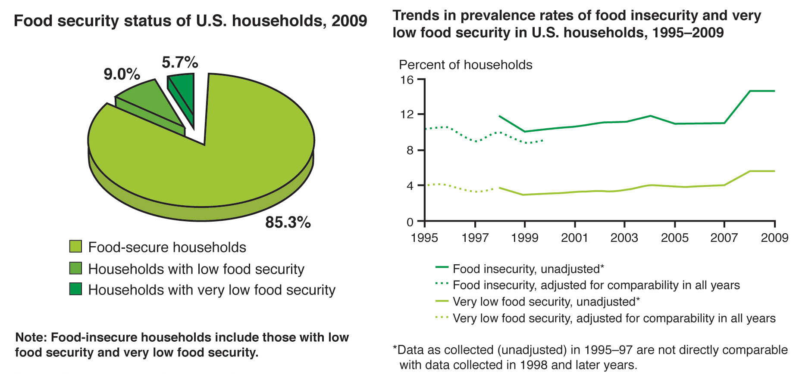
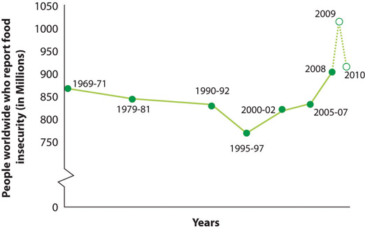

Nutrition is an evidence-based science. Nutritional scientists continuously advance our knowledge of nutrition by building on prior research.
Nutrition Quiz
Listen to questions and answers to common concerns about food and eating habits.
As we get started on our journey into the world of health and nutrition, our first focus will be to demonstrate that nutritional science is an evolving field of study, continually being updated and supported by research, studies, and trials. Once we establish this, your confidence will be strengthened in nutritional science to help guide your eating habits. Let’s begin with the story of hurry, curry, and worry: the story of H. pylori.
Peptic ulcers are painful sores in the gastrointestinal tract and can cause symptoms of abdominal pain, nausea, loss of appetite, and weight loss. The cure for this ailment took some time for scientists to figure out. If your grandfather complained to his doctor of symptoms of peptic ulcer, he was probably told to avoid spicy foods, alcohol, and coffee, and to manage his stress. In the early twentieth century, the medical community thought peptic ulcers were caused by what you ate and drank, and by stress. In 1915, Dr. Bertram W. Sippy devised the “Sippy diet” for treating peptic ulcers. Dr. Sippy advised patients to drink small amounts of cream and milk every hour in order to neutralize stomach acid. And then, increasingly, introduce soft bland foods with frequent meal times. For a while this diet sometimes worked, fooling both doctors and patients. However, the disappearance of peptic ulcer symptoms was likely the result of having a full stomach all the time, as the symptoms more often occur when the stomach is empty. Ultimately, the Sippy diet did not cure peptic ulcers and in the latter 1960s scientists discovered the diet was associated with a significant increase in heart disease due to its high saturated fat content.
In the 1980s, Australian physicians Barry Marshall and Robin WarrenCurrey, R. “Ulcers—The Culprit Is H. Pylori!” National Institutes of Health, Office of Science Education. Accessed November 10, 2011. http://science.education.nih.gov/home2.nsf/Educational+ResourcesResource+FormatsOnline+Resources+High+ School/928BAB9A176A71B585256CCD00634489 proposed a radical hypothesis—that the cause of ulcers was bacteria that could survive in the acidic environment of the stomach and small intestine. They met with significant opposition to their hypothesis but they persisted with their research. Their research led to an understanding that the spiral shape of the bacterium H. pylori allows it to penetrate the stomach’s mucous lining, where it secretes an enzyme that generates substances to neutralize the stomach’s acidity. This weakens the stomach’s protective mucous, making the tissue more susceptible to the damaging effects of acid, leading to the development of sores and ulcers. H. pylori also prompt the stomach to produce even more acid, further damaging the stomach lining. Marshall actually drank a dish of H. pylori hoping to give himself an ulcer to prove his point. A few days later he was vomiting and had inflamed tissue in his stomach. The presence of H. pylori was confirmed. He then took an antibiotic and the symptoms of H. pylori infection dissipated. Experimental success? It still took years for the medical community to be entirely convinced of the link between peptic ulcers and H. pylori.
In 1994, the National Institutes of Health held a conference on the cause of peptic ulcers. There was scientific consensus that H. pylori cause most peptic ulcers and that patients should be treated with antibiotics. In 1996, the Food and Drug Administration (FDA) approved the first antibiotic that could be used to treat patients with peptic ulcers. Nevertheless, the link between H. pylori and peptic ulcers was not sufficiently communicated to health-care providers. In fact, 75 percent of patients with peptic ulcers in the late 1990s were still being prescribed antacid medications and advised to change their diet and reduce their stress. In 1997, the Centers for Disease Control and Prevention (CDC), alongside other public health organizations, began an intensive educational campaign to convince the public and health-care providers that peptic ulcers are a curable condition requiring treatment with antibiotics. Today, if you go to your primary physician you will be given the option of taking an antibiotic to eradicate H. pylori from your gut. Scientists have progressed even further and mapped the entire genome of H. pylori, which will hopefully aid in the discovery of even better drugs to treat peptic ulcers.
The H. pylori discovery was made recently, overturning a theory applied in our own time. The demystification of disease requires the continuous forward march of science, overturning old, traditional theories and discovering new, more effective ways to treat disease and promote health. In 2005, Marshall and Warren were awarded the prestigious Nobel Prize in medicine for their discovery that many stomach ulcers are caused by H. pylori—not by hurry, curry, and worry.
Make a commitment to empower yourself with scientific evidence as a strategy for achieving a healthier diet.
A primary goal of this text is to provide you with information backed by nutritional science, and with a variety of resources that use scientific evidence to optimize health and prevent disease. In this chapter you will see that there are many conditions and deadly diseases that can be prevented by good nutrition. You will also discover the many other determinants of health and disease, how the powerful tool of scientific investigation is used to design dietary guidelines, and recommendations that will promote health and prevent disease.
“The most exciting phrase to hear in science, the one that heralds new discoveries, is not ‘Eureka!’ but ‘That’s funny...’”
Isaac Asimov (January 2, 1920–April 6, 1992)
Americans are bombarded with television programs that show where to find the best dinners, pizzas, and cakes, and the restaurants that serve the biggest and juiciest burgers. Other programs feature chefs battling to prepare meals, and the top places to burst your belly from consuming atomic chicken wings and deli sandwiches longer than a foot. There are also shows that feature bizarre foods from cultures around the world. How do you use the information from popular network food shows to build a nutritious meal? You don’t—these shows are for entertainment. The construction of a nutritious meal requires learning about which foods are healthy and which foods are not, how foods and nutrients function in your body, and how to use scientific resources. This text is designed to provide you with the information necessary to make sound nutritional choices that will optimize health and help prevent disease.
The word nutrition first appeared in 1551 and comes from the Latin word nutrire, meaning “to nourish.” Today, we define nutritionThe sum of all processes involved in how organisms obtain nutrients, metabolize them, and use them to support all of life’s processes. as the sum of all processes involved in how organisms obtain nutrients, metabolize them, and use them to support all of life’s processes. Nutritional scienceThe investigation of how an organism is nourished, and how nourishment affects personal health, population health, and planetary health. is the investigation of how an organism is nourished, and incorporates the study of how nourishment affects personal health, population health, and planetary health. Nutritional science covers a wide spectrum of disciplines. As a result, nutritional scientists can specialize in particular aspects of nutrition such as biology, physiology, immunology, biochemistry, education, psychology, sustainability, and sociology.
Without adequate nutrition the human body does not function optimally, and severe nutritional inadequacy can lead to disease and even death. The typical American diet is lacking in many ways, from not containing the proper amounts of essential nutrients, to being too speedily consumed, to being only meagerly satisfying. Dietitians are nutrition professionals who integrate their knowledge of nutritional science into helping people achieve a healthy diet and develop good dietary habits. The Academy of Nutrition and Dietetics (AND) is the largest organization of nutrition professionals worldwide and dietitians registered with the AND are committed to helping Americans eat well and live healthier lives. To learn more from the AND’s nutritional advice, visit http://www.eatright.org/default.aspx.
Your ability to wake up, to think clearly, to communicate, to hope, to dream, to go to school, to gain knowledge, to go to work, to earn a living, and to do all of the things that you like to do are dependent upon one factor—your health. Good health means you are able to function normally and work hard to achieve your goals in life. For the next few minutes, take some time to view snapshots of the insides of the refrigerators of American mechanics, doctors, school teachers, hunters, short-order cooks, college students, vegans, and more. Visit Mark Menjivar’s portrait exhibition, “You Are What You Eat” (Note 1.7 "Interactive 1.1"). Menjivar hopes these images will invoke new thoughts about, “How we care for our bodies. How we care for others. And how we care for the land.” As you look at these images think about your personal health, the health of your family and friends, and the health of this planet. These hopes encompass the inspirations for this book.
Mark Menjivar has traveled around the United States taking photographs of the contents of refrigerators of numerous types of people. The portraits are available for viewing on his website under “You Are What You Eat.”
In 1946, the World Health Organization (WHO) defined healthA state of complete physical, mental, and social well-being and not merely the absence of disease or infirmity. as “a state of complete physical, mental, and social well-being, and not merely the absence of disease or infirmity.”World Health Organization. Preamble to the Constitution of the World Health Organization as adopted by the International Health Conference, New York, June 19–July 22, 1946. http://www.who.int/suggestions/faq/en/ This definition was adopted into the WHO consititution in 1948 and has not been ammended since. A triangle is often used to depict the equal influences of physical, mental, and social well-being on health (Figure 1.1 "The Health Triangle"). DiseaseAny abnormal condition that affects the health of an organism and is characterized by specific signs and symptoms. is defined as any abnormal condition affecting the health of an organism, and is characterized by specific signs and symptoms. Signs refer to identifying characteristics of a disease such as swelling, weight loss, or fever. Symptoms are the features of a disease recognized by a patient and/or their doctor. Symptoms can include nausea, fatigue, irritability, and pain. Diseases are broadly categorized as resulting from pathogens (i.e., bacteria, viruses, fungi, and parasites), deficiencies, genetics, and physiological dysfunction. Diseases that primarily affect physical health are those that impair body structure (as is the case with osteoporosis), or functioning (as is the case with cardiovascular disease). Mental illnesses primarily affect mental and social well-being.
The foods we eat affect all three aspects of our health. For example, a teen with Type 2 diabetes (a disease brought on by poor diet) is first diagnosed by physical signs and symptoms such as increased urination, thirstiness, and unexplained weight loss. But research has also found that teens with Type 2 diabetes have impaired thinking and do not interact well with others in school, thereby affecting mental and social well-being. Type 2 diabetes is just one example of a physiological disease that affects all aspects of health—physical, mental, and social.
In 1894, the first congressional funds were appropriated to the US Department of Agriculture (USDA) for the study of the relationship between nutrition and human health. Dr. Wilbur Olin Atwater was appointed as the Chief of Nutrition Investigations and is accoladed as the “Father of Nutrition Science” in America.Combs, G.F. “Celebration of the Past: Nutrition at USDA.” J Nutr 124, no. 9 supplement (1994): 1728S–32S. http://jn.nutrition.org/content/124/9_Suppl/1728S.long Under his guidance the USDA released the first bulletin to the American public that contained information on the amounts of fat, carbohydrates, proteins, and food energy in various foods. Nutritional science advanced considerably in these early years, but it took until 1980 for the USDA and the US Department of Health and Human Services (HHS) to jointly release the first edition of Nutrition and Your Health: Dietary Guidelines for Americans.
Although wide distribution of dietary guidelines did not come about until the 1980s, many historical events that demonstrated the importance of diet to health preceded their release. Assessments of the American diet in the 1930s led President Franklin D. Roosevelt to declare in his inaugural address on January 20, 1937, “I see one-third of our nation is ill-housed, ill-clad, and ill-nourished.” From the time of Atwater until the onset of the Great Depression nutritional scientists had discovered many of the vitamins and minerals essential for the functioning of the human body. Their work and the acknowledgement by President FDR of the nutritional inadequacy of the American diet evoked a united response between scientists and government leading to the enrichment of flour, the development of school lunch programs, and advancements of nutritional education in this country.
Figure 1.2 The Federal Government’s New and Improved Tool of Nutritional Communication

In the latter part of the twentieth century nutritional scientists, public health organizations, and the American public increasingly recognized that eating too much of certain foods is linked to chronic diseases. We now know that diet-related conditions and diseases include hypertension (high blood pressure), obesity, Type 2 diabetes, cardiovascular disease, some cancers, and osteoporosis. These diet-related conditions and diseases are some of the biggest killers of Americans. The HHS reports that unhealthy diets and inactivity cause between 310,000 and 580,000 deaths every single year.Center for Science in the Public Interest. “Nutrition Policy.” Accessed March 1, 2012. http://www.cspinet.org/nutritionpolicy/nutrition_policy.html#disease According to the USDA, eating healthier could save Americans over $70 billion per year and this does not include the cost of obesity, which is estimated to cost a further $117 billion per year.Combs, G.F. “Celebration of the Past: Nutrition at USDA.” J Nutr 124, no. 9 supplement (1994): 1728S–32S. http://jn.nutrition.org/content/124/9_Suppl/1728S.long Unfortunately, despite the fact that the prevalence of these diseases can be decreased by healthier diets and increased physical activity, the CDC reports that the federal government spends one thousand times more to treat disease than to prevent it ($1,390 versus $1.21 per person each year).Combs, G.F. “Celebration of the Past: Nutrition at USDA.” J Nutr 124, no. 9 supplement (1994): 1728S–32S. http://jn.nutrition.org/content/124/9_Suppl/1728S.long In 2010, the new edition of the dietary guidelines identified obesity as the number one nutritional-related health problem in the United States and established strategies to combat its incidence and health consequences in the American population. A 2008 study in the journal Obesity reported that if current trends are not changed, 100 percent of Americans will be overweight or obese in 2048!Wang Y, et al. “Will All Americans Become Overweight or Obese? Estimating the Progression and Cost of the US Obesity Epidemic.” Obesity 10, no. 16 (October 2008): 2323–30. http://www.nature.com/oby/journal/v16/n10/full/oby2008351a.html In 2011, the US federal government released a new multimedia tool that aims to help Americans choose healthier foods from the five food groups (grains, vegetables, fruits, dairy, and proteins). The tool, called “Choose MyPlate,” is available at choosemyplate.gov.
Figure 1.3 The Six Classes of Nutrients
The foods we eat contain nutrientsSubstances required by the body that must be obtained from the diet.. Nutrients are substances required by the body to perform its basic functions. Nutrients must be obtained from diet, since the human body does not synthesize them. Nutrients are used to produce energy, detect and respond to environmental surroundings, move, excrete wastes, respire (breathe), grow, and reproduce. There are six classes of nutrients required for the body to function and maintain overall health. These are carbohydrates, lipids, proteins, water, vitamins, and minerals. Foods also contain nonnutrients that may be harmful (such as cholesterol, dyes, and preservatives) or beneficial (such as antioxidants). Nonnutrient substances in food will be further explored in Chapter 8 "Nutrients Important As Antioxidants".
Nutrients that are needed in large amounts are called macronutrientsNutrients that are needed in large amounts. Includes carbohydrates, lipids, proteins, and water.. There are three classes of macronutrients: carbohydrates, lipids, and proteins. These can be metabolically processed into cellular energy. The energy from macronutrients comes from their chemical bonds. This chemical energy is converted into cellular energy that is then utilized to perform work, allowing our bodies to conduct their basic functions. A unit of measurement of food energy is the calorie. On nutrition food labels the amount given for “calories” is actually equivalent to each calorie multiplied by one thousand. A kilocalorie (one thousand calories, denoted with a small “c”) is synonymous with the “Calorie” (with a capital “C”) on nutrition food labels. Water is also a macronutrient in the sense that you require a large amount of it, but unlike the other macronutrients it does not yield calories.
CarbohydratesOrganic molecules composed of carbon, hydrogen, and oxygen. There are two basic forms: simple sugars and complex sugars. are molecules composed of carbon, hydrogen, and oxygen. The major food sources of carbohydrates are grains, milk, fruits, and starchy vegetables like potatoes. Nonstarchy vegetables also contain carbohydrates, but in lesser quantities. Carbohydrates are broadly classified into two forms based on their chemical structure: fast-releasing carbohydrates, often called simple sugars, and slow-releasing carbohydrates.
Fast-releasing carbohydrates consist of one or two basic units. Examples of simple sugars include sucrose, the type of sugar you would have in a bowl on the breakfast table, and glucose, the type of sugar that circulates in your blood.
Figure 1.4 The Macronutrients: Carbohydrates, Lipids, Protein, and Water
Slow-releasing carbohydrates are long chains of simple sugars that can be branched or unbranched. During digestion, the body breaks down all slow-releasing carbohydrates to simple sugars, mostly glucose. Glucose is then transported to all our cells where it is stored, used to make energy, or used to build macromolecules. Fiber is also a slow-releasing carbohydrate, but it cannot be broken down in the human body and passes through the digestive tract undigested unless the bacteria that inhabit the gut break it down.
One gram of carbohydrates yields four kilocalories of energy for the cells in the body to perform work. In addition to providing energy and serving as building blocks for bigger macromolecules, carbohydrates are essential for proper functioning of the nervous system, heart, and kidneys. As mentioned, glucose can be stored in the body for future use. In humans, the storage molecule of carbohydrates is called glycogen and in plants it is known as starches. Glycogen and starches are slow-releasing carbohydrates.
LipidsA family of organic compounds composed of carbon, hydrogen, and oxygen. They are insoluble in water. The three main types of lipids are triglycerides, phospholipids, and sterols. are also a family of molecules composed of carbon, hydrogen, and oxygen, but unlike carbohydrates, they are insoluble in water. Lipids are found predominately in butter, oils, meats, dairy products, nuts, and seeds, and in many processed foods. The three main types of lipids are triglycerides (triacylglycerols), phospholipids, and sterols. The main job of lipids is to store energy. Lipids provide more energy per gram than carbohydrates (nine kilocalories per gram of lipids versus four kilocalories per gram of carbohydrates). In addition to energy storage, lipids serve as cell membranes, surround and protect organs, aid in temperature regulation, and regulate many other functions in the body.
ProteinsMacromolecules composed of chains of organic monomeric subunits, called amino acids. Amino acids are simple monomers composed of carbon, oxygen, hydrogen, and nitrogen. are macromolecules composed of chains of subunits called amino acids. Amino acids are simple subunits composed of carbon, oxygen, hydrogen, and nitrogen. The food sources of proteins are meats, dairy products, seafood, and a variety of different plant-based foods, most notably soy. The word protein comes from a Greek word meaning “of primary importance,” which is an apt description of these macronutrients; they are also known colloquially as the “workhorses” of life. Proteins provide four kilocalories of energy per gram; however providing energy is not protein’s most important function. Proteins provide structure to bones, muscles and skin, and play a role in conducting most of the chemical reactions that take place in the body. Scientists estimate that greater than one-hundred thousand different proteins exist within the human body.
There is one other nutrient that we must have in large quantities: water. Water does not contain carbon, but is composed of two hydrogens and one oxygen per molecule of water. More than 60 percent of your total body weight is water. Without it, nothing could be transported in or out of the body, chemical reactions would not occur, organs would not be cushioned, and body temperature would fluctuate widely. On average, an adult consumes just over two liters of water per day from food and drink. According to the “rule of threes,” a generalization supported by survival experts, a person can survive three minutes without oxygen, three days without water, and three weeks without food. Since water is so critical for life’s basic processes, the amount of water input and output is supremely important, a topic we will explore in detail in Chapter 7 "Nutrients Important to Fluid and Electrolyte Balance".
MicronutrientsNutrients needed in smaller amounts. Includes vitamins and minerals. are nutrients required by the body in lesser amounts, but are still essential for carrying out bodily functions. Micronutrients include all the essential minerals and vitamins. There are sixteen essential minerals and thirteen vitamins (See Table 1.1 "Minerals and Their Major Functions" and Table 1.2 "Vitamins and Their Major Functions" for a complete list and their major functions). In contrast to carbohydrates, lipids, and proteins, micronutrients are not directly used for making energy, but they assist in the process as being part of enzymes (i.e., coenzymes). Enzymes are proteins that catalyze chemical reactions in the body and are involved in all aspects of body functions from producing energy, to digesting nutrients, to building macromolecules. Micronutrients play many roles in the body.
Minerals are solid inorganic substances that form crystals and are classified depending on how much of them we need. Trace minerals, such as molybdenum, selenium, zinc, iron, and iodine, are only required in a few milligrams or less and macrominerals, such as calcium, magnesium, potassium, sodium, and phosphorus, are required in hundreds of milligrams. Many minerals are critical for enzyme function, others are used to maintain fluid balance, build bone tissue, synthesize hormones, transmit nerve impulses, contract and relax muscles, and protect against harmful free radicals.
Table 1.1 Minerals and Their Major Functions
| Minerals | Major Functions |
|---|---|
| Macro | |
| Sodium | Fluid balance, nerve transmission, muscle contraction |
| Chloride | Fluid balance, stomach acid production |
| Potassium | Fluid balance, nerve transmission, muscle contraction |
| Calcium | Bone and teeth health maintenance, nerve transmission, muscle contraction, blood clotting |
| Phosphorus | Bone and teeth health maintenance, acid-base balance |
| Magnesium | Protein production, nerve transmission, muscle contraction |
| Sulfur | Protein production |
| Trace | |
| Iron | Carries oxygen, assists in energy production |
| Zinc | Protein and DNA production, wound healing, growth, immune system function |
| Iodine | Thyroid hormone production, growth, metabolism |
| Selenium | Antioxidant |
| Copper | Coenzyme, iron metabolism |
| Manganese | Coenzyme |
| Fluoride | Bone and teeth health maintenance, tooth decay prevention |
| Chromium | Assists insulin in glucose metabolism |
| Molybdenum | Coenzyme |
The thirteen vitamins are categorized as either water-soluble or fat-soluble. The water-soluble vitamins are vitamin C and all the B vitamins, which include thiamine, riboflavin, niacin, pantothenic acid, pyroxidine, biotin, folate and cobalamin. The fat-soluble vitamins are A, D, E, and K. Vitamins are required to perform many functions in the body such as making red blood cells, synthesizing bone tissue, and playing a role in normal vision, nervous system function, and immune system function.
Vitamin deficiencies can cause severe health problems. For example, a deficiency in niacin causes a disease called pellagra, which was common in the early twentieth century in some parts of America. The common signs and symptoms of pellagra are known as the “4D’s—diarrhea, dermatitis, dementia, and death.” Until scientists found out that better diets relieved the signs and symptoms of pellagra, many people with the disease ended up in insane asylums awaiting death (see Note 1.19 "Video 1.1"). Other vitamins were also found to prevent certain disorders and diseases such as scurvy (vitamin C), night blindness (vitamin A), and rickets (vitamin D).
Pellagra
(click to see video)This video provides a brief history of Dr. Joseph Goldberger’s discovery that pellagra was a diet-related disease.
Table 1.2 Vitamins and Their Major Functions
| Vitamins | Major Functions |
|---|---|
| Water-soluble | |
| B1 (thiamine) | Coenzyme, energy metabolism assistance |
| B2 (riboflavin) | Coenzyme, energy metabolism assistance |
| B3 (niacin) | Coenzyme, energy metabolism assistance |
| B5 (pantothenic acid) | Coenzyme, energy metabolism assistance |
| B6 (pyroxidine) | Coenzyme, amino acid synthesis assistance |
| Biotin | Coenzyme |
| Folate | Coenzyme, essential for growth |
| B12 (cobalamin) | Coenzyme, red blood cell synthesis |
| C | Collagen synthesis, antioxidant |
| Fat-soluble | |
| A | Vision, reproduction, immune system function |
| D | Bone and teeth health maintenance, immune system function |
| E | Antioxidant, cell membrane protection |
| K | Bone and teeth health maintenance, blood clotting |
One measurement of food quality is the amount of nutrients it contains relative to the amount of energy it provides. High-quality foods are nutrient dense, meaning they contain lots of the nutrients relative to the amount of calories they provide. Nutrient-dense foods are the opposite of “empty-calorie” foods such as carbonated sugary soft drinks, which provide many calories and very little, if any, other nutrients. Food quality is additionally associated with its taste, texture, appearance, microbial content, and how much consumers like it.
It is better to get all your micronutrients from the foods you eat as opposed to from supplements. Supplements contain only what is listed on the label, but foods contain many more macronutrients, micronutrients, and other chemicals, like antioxidants that benefit health. While vitamins, multivitamins, and supplements are a $20 billion industry in this country and more than 50 percent of Americans purchase and use them daily, there is no consistent evidence that they are better than food in promoting health and preventing disease. Dr. Marian Neuhouser, associate of the Fred Hutchinson Cancer Research Center in Seattle, says that “…scientific data are lacking on the long-term health benefits of supplements. To our surprise, we found that multivitamins did not lower the risk of the most common cancers and also had no impact on heart disease.”Woodward, K. “Multivitamins Each Day Will Not Keep Common Cancers Away; Largest Study of Its Kind Provides Definitive Evidence that Multivitamins Will Not Reduce Risk of Cancer or Heart Disease in Postmenopausal Women.” Fred Hutchinson Cancer Research Center. Center News 16 (February 2009). http://www.fhcrc.org/about/pubs/center_news/online/2009/02/multivitamin_study.html
Make a list of some of your favorite foods and visit the “What’s In the Foods You Eat?” search tool provided by the USDA. What are some of the nutrients found in your favorite foods?
Similar to the method by which a police detective finally charges a criminal with a crime, nutritional scientists discover the health effects of food and its nutrients by first making an observation. Once observations are made, they come up with a hypothesis, test their hypothesis, and then interpret the results. After this, they gather additional evidence from multiple sources and finally come up with a conclusion on whether the food suspect fits the claim. This organized process of inquiry used in forensic science, nutritional science, and every other science is called the scientific methodThe process of inquiry that involves making an observation, coming up with a hypothesis, conducting a test of that hypothesis, evaluating results, gathering more supporting evidence, and coming up with a conclusion..
Below is an illustration of the scientific method at work—in this case to prove that iodine is a nutrient.Zimmerman, M.B. “Research on Iodine Deficiency and Goiter in the 19th and Early 20th Centuries.” J Nutr 138, no. 11 (November 2008): 2060–63. http://jn.nutrition.org/content/138/11/2060.full, Carpenter, K.J. “David Marine and the Problem of Goiter.” J Nutr 135, no.4 (April 2005): 675–80. http://jn.nutrition.org/content/135/4/675.full?sid=d06fdd35-566f -42a2-a3fd-efbe0736b7ba In 1811, French chemist Bernard Courtois was isolating saltpeter for producing gunpowder to be used by Napoleon’s army. To carry out this isolation he burned some seaweed and in the process observed an intense violet vapor that crystallized when he exposed it to a cold surface. He sent the violet crystals to an expert on gases, Joseph Gay-Lussac, who identified the crystal as a new element. It was named iodine, the Greek word for violet. The following scientific record is some of what took place in order to conclude that iodine is a nutrient.
Observation. Eating seaweed is a cure for goiter, a gross enlargement of the thyroid gland in the neck.
Hypothesis. In 1813, Swiss physician Jean-Francois Coindet hypothesized that the seaweed contained iodine and he could use just iodine instead of seaweed to treat his patients.
Experimental test. Coindet administered iodine tincture orally to his patients with goiter.
Interpret results. Coindet’s iodine treatment was successful.
Gathering more evidence. Many other physicians contributed to the research on iodine deficiency and goiter.
Hypothesis. French chemist Chatin proposed that the low iodine content in food and water of certain areas far away from the ocean were the primary cause of goiter and renounced the theory that goiter was the result of poor hygiene.
Experimental test. In the late 1860s the program, “The stamping-out of goiter,” started with people in several villages in France being given iodine tablets.
Results. The program was effective and 80 percent of goitrous children were cured.
Hypothesis. In 1918, Swiss doctor Bayard proposed iodizing salt as a good way to treat areas endemic with goiter.
Experimental test. Iodized salt was transported by mules to a small village at the base of the Matterhorn where more than 75 percent of school children were goitrous. It was given to families to use for six months.
Results. The iodized salt was beneficial in treating goiter in this remote population.
Experimental test. Physician David Marine conducted the first experiment of treating goiter with iodized salt in America in Akron, Ohio.
Results. This study conducted on over four-thousand school children found that iodized salt prevented goiter.
Conclusions. Seven other studies similar to Marine’s were conducted in Italy and Switzerland that also demonstrated the effectiveness of iodized salt in treating goiter. In 1924, US public health officials initiated the program of iodizing salt and started eliminating the scourge of goiterism. Today more than 70 percent of American households use iodized salt and many other countries have followed the same public health strategy to reduce the health consequences of iodine deficiency.
It took more than one hundred years from iodine’s discovery as an effective treatment for goiter until public health programs recognized it as such. Although a lengthy process, the scientific method is a productive way to define essential nutrients and determine their ability to promote health and prevent disease. The scientific method is part of the overall evidence-based approach to designing nutritional guidelines. An evidence-based approach to nutrition includes:Briss, P.A., et al. “Developing an Evidence-Based Guide to Community Preventive Services—Methods.” Am J Prev Med 18, no. 1S (2000): 35–43., Myers, E. “Systems for Evaluating Nutrition Research for Nutrition Care Guidelines: Do They Apply to Population Dietary Guidelines?” J Am Diet Assoc 103, no. 12, supplement 2 (December 2003): 34–41.
The Food and Nutrition Board of the Institute of Medicine, a nonprofit, nongovernmental organization, constructs its nutrient recommendations (i.e., Dietary Reference Intakes, or DRI) using an evidence-based approach to nutrition. The entire procedure for setting the DRI is documented and made available to the public. The same approach is used by the USDA and HHS, which are departments of the US federal government. The USDA and HHS websites are great tools for discovering ways to optimize health; however, it is important to gather nutrition information from multiple resources as there are often differences in opinion among various scientists and public health organizations. While the new Dietary Guidelines, published in 2010, have been well-received by some, there are nongovernmental public health organizations that are convinced that some pieces of the guidelines may be influenced by lobbying groups and/or the food industry. For example, the Harvard School of Public Health (HSPH) feels the government falls short by being “too lax on refined grains.”The Harvard School of Public Health. “New US Dietary Guidelines: Progress, Not Perfection.” © 2012 The President and Fellows of Harvard College. http://www.hsph.harvard.edu/nutritionsource/what-should-you-eat/dietary-guidelines -2010/index.html The guidelines recommend getting at least half of grains from whole grains—according to the HSPH this still leaves too much consumption of refined grains.
For a list of reliable sources that advocate good nutrition to promote health and prevent disease using evidence-based science see Table 1.3 "Web Resources for Nutrition and Health". In Chapter 2 "Achieving a Healthy Diet", we will further discuss distinguishing criteria that will enable you to wade through misleading nutrition information and instead gather your information from reputable, credible websites and organizations.
Table 1.3 Web Resources for Nutrition and Health
| Organization | Website |
|---|---|
| Governmental | |
| US Department of Agriculture | http://www.usda.gov/wps/portal/usda/usdahome |
| USDA Center for Nutrition Policy and Promotion | http://www.cnpp.usda.gov/ |
| US Department of Health and Human Services | http://www.hhs.gov/ |
| Centers for Disease Control and Prevention | http://www.cdc.gov/ |
| Food and Drug Administration | http://www.fda.gov/ |
| Healthy People | http://www.healthypeople.gov/2020/default.aspx |
| Office of Disease Prevention and Health Promotion | http://odphp.osophs.dhhs.gov/ |
| Health Canada | http://www.hc-sc.gc.ca/ |
| International | |
| World Health Organization | http://www.who.int/en/ |
| Food and Agricultural Organization of the United Nations | http://www.fao.org/ |
| Nongovernmental | |
| Harvard School of Public Health | http://www.hsph.harvard.edu/nutritionsource/index.html |
| Mayo Clinic | http://www.mayoclinic.com/ |
| Linus Pauling Institute | http://lpi.oregonstate.edu/ |
| American Society for Nutrition | http://www.nutrition.org/ |
| American Medical Association | http://www.ama-assn.org/ |
| American Diabetes Association | http://www.diabetes.org/ |
| The Academy of Nutrition and Dietetics | http://www.eatright.org/ |
| Institute of Medicine: Food and Nutrition | http://www.iom.edu/Global/Topics/Food-Nutrition.aspx |
| Dietitians of Canada | http://www.dietitians.ca/ |
There are many types of scientific studies that can be used to provide supporting evidence for a particular hypothesis. The various types of studies include epidemiological studies, interventional clinical trials, and randomized clinical interventional trials.
Epidemiological studiesScientific investigations that define frequency, distribution, and patterns of health events in a population. are observational studies and are often the front-line studies for public health. The CDC defines epidemiological studies as scientific investigations that define frequency, distribution, and patterns of health events in a population. Thus, these studies describe the occurrence and patterns of health events over time. The goal of an epidemiological study is to find factors associated with an increased risk for a health event, though these sometimes remain elusive. An example of an epidemiological study is the Framingham Heart Study, a project of the National Heart, Lung and Blood Institute and Boston University that has been ongoing since 1948. This study first examined the physical health and lifestyles of 5,209 men and women from the city of Framingham, Massachusetts and has now incorporated data from the children and grandchildren of the original participants. One of the seminal findings of this ambitious study was that higher cholesterol levels in the blood are a risk factor for heart disease.The Framingham Heart Study, a project of the National Heart, Lung, and Blood Institute and Boston University. “History of the Framingham Heart Study.” © 2012 Framingham Heart Study. http://www.framinghamheartstudy.org/about/history.html Epidemiological studies are a cornerstone for examining and evaluating public health and some of their advantages are that they can lead to the discovery of disease patterns and risk factors for diseases, and they can be used to predict future healthcare needs and provide information for the design of disease prevention strategies for entire populations. Some shortcomings of epidemiological studies are that investigators cannot control environments and lifestyles, a specific group of people studied may not be an accurate depiction of an entire population, and these types of scientific studies cannot directly determine if one variable causes another.
Interventional clinical trial studiesScientific investigations in which a variable is changed between groups of people. are scientific investigations in which a variable is changed between groups of people. When well done, this type of study allows one to determine causal relationships. An example of an interventional clinical trial study is the Dietary Approaches to Stop Hypertension (DASH) trial published in the April 1997 issue of The New England Journal of Medicine.Appel, L. J., et al. “A Clinical Trial of the Effects of Dietary Patterns on Blood Pressure.,” N Engl J Med 336 (April 1997): 1117–24. http://www.nejm.org/doi/full/10.1056/NEJM199704173361601 In this study, 459 people were randomly assigned to three different groups; one was put on an average American control diet, a second was put on a diet rich in fruits and vegetables, and the third was put on a combination diet rich in fruits, vegetables, and low-fat dairy products with reduced saturated and total fat intake. The groups remained on the diets for eight weeks. Blood pressures were measured before starting the diets and after eight weeks. Results of the study showed that the group on the combination diet had significantly lower blood pressure at the end of eight weeks than those who consumed the control diet. The authors concluded that the combination diet is an effective nutritional approach to treat high blood pressure. The attributes of high-quality clinical interventional trial studies are:
What are confounding variables? These are factors other than the one being tested that could influence the results of the study. For instance, in the study we just considered, if one group of adults did less physical activity than the other, then it could be the amount of physical activity rather than the diet being tested that caused the differences in blood pressures among the groups.
The limitations of these types of scientific studies are that they are difficult to carry on for long periods of time, are costly, and require that participants remain compliant with the intervention. Furthermore, it is unethical to study certain interventions. (An example of an unethical intervention would be to advise one group of pregnant mothers to drink alcohol to determine the effects of alcohol intake on pregnancy outcome, because we know that alcohol consumption during pregnancy damages the developing fetus.)
Randomized clinical interventional trial studiesScientific investigations which incorporate a change in the variable being tested between groups of people and are therefore capable of determining a causal relationship. are powerful tools to provide supporting evidence for a particular relationship and are considered the “gold standard” of scientific studies. A randomized clinical interventional trial is a study in which participants are assigned by chance to separate groups that compare different treatments. Neither the researchers nor the participants can choose which group a participant is assigned. However, from their limitations it is clear that epidemiological studies complement interventional clinical trial studies and both are necessary to construct strong foundations of scientific evidence for health promotion and disease prevention.
Other scientific studies used to provide supporting evidence for a hypothesis include laboratory studies conducted on animals or cells. An advantage of this type of study is that they typically do not cost as much as human studies and they require less time to conduct. Other advantages are that researchers have more control over the environment and the amount of confounding variables can be significantly reduced. Moreover, animal and cell studies provide a way to study relationships at the molecular level and are also helpful in determining the exact mechanism by which a specific nutrient causes a change in health. The disadvantage of these types of studies are that researchers are not working with whole humans and thus the results may not be relevant. Nevertheless, well-conducted animal and cell studies that can be repeated by multiple researchers and obtain the same conclusion are definitely helpful in building the evidence to support a scientific hypothesis.
Science is always moving forward, albeit sometimes slowly. One study is not enough to make a guideline or a recommendation or cure a disease. Science is a stepwise process that builds on past evidence and finally culminates into a well-accepted conclusion. Unfortunately, not all scientific conclusions are developed in the interest of human health and it is important to know where a scientific study was conducted and who provided the money. Indeed, just as an air quality study paid for by a tobacco company diminishes its value in the minds of readers, so does one on red meat performed at a laboratory funded by a national beef association.
Science can also be contentious even amongst experts that don’t have any conflicting financial interests. To see scientists debating over the nutritional guidelines, watch Note 1.27 "Video Link 1.2". Contentious science is actually a good thing as it forces researchers to be of high integrity, well-educated, well-trained, and dedicated. It also instigates public health policy makers to seek out multiple sources of evidence in order to support a new policy. Agreement involving many experts across multiple scientific disciplines is necessary for recommending dietary changes to improve health and prevent disease. Although a somewhat slow process, it is better for our health to allow the evidence to accumulate before incorporating some change in our diet.
The Experts Debate
This webcast from March 29, 2011 demonstrates how science is always evolving and how debate among nutrition science experts influences policy decisions.
http://www.hsph.harvard.edu/forum/boosting-vitamin-d-not-enough-or-too-much.cfm
Source: Harvard School of Public Health, in collaboration with Reuters.
One of the newest areas in the realm of nutritional science is the scientific discipline of nutritional genetics, also called nutrigenomics. Genes are part of DNA and contain the genetic information that make up all our traits. Genes are codes for proteins and when they are turned “on” or “off,” they change how the body works. While we know that health is defined as more than just the absence of disease, there are currently very few accurate genetic markers of good health. Rather, there are many more genetic markers for disease. However, science is evolving and nutritional genetics aims to identify what nutrients to eat to “turn on” healthy genes and “turn off” genes that cause disease. Eventually this field will progress so that a person’s diet can be tailored to their genetics. Thus, your DNA will determine your optimal diet.
Nutrigenomics
(click to see video)A dietitian describes the new scientific discipline of nutrigenomics and its potential impact on diet and health.
Figure 1.5 The “Smart Fridge”
As science evolves, so does technology. Both can be used to create a healthy diet, optimize health, and prevent disease. Picture yourself not too far into the future: you are wearing a small “dietary watch” that painlessly samples your blood, and downloads the information to your cell phone, which has an app that evaluates the nutrient profile of your blood and then recommends a snack or dinner menu to assure you maintain adequate nutrient levels. What else is not far off? How about another app that provides a shopping list that adheres to all dietary guidelines and is emailed to the central server at your local grocer who then delivers the food to your home? The food is then stored in your smart fridge which documents your daily diet at home and delivers your weekly dietary assessment to your home computer. At your computer, you can compare your diet with other diets aimed at weight loss, optimal strength training, reduction in risk for specific diseases or any other health goals you may have. You may also delve into the field of nutritional genetics and download your gene expression profiles to a database that analyzes yours against millions of others.
In addition to nutrition, health is affected by genetics, the environment, life cycle, and lifestyle. These factors are referred to as “determinants” of health and they all interact with each other. For example, family income influences the food choices available and the quantity and quality of food that can be purchased, which of course affects nutrition. Except for nutrition and lifestyle, these factors can be difficult or impossible to change.
Everyone starts out in life with the genes handed down to them from the families of their mother and father. GenesThe sequences of DNA that code for all the proteins in your body. are responsible for your many traits as an individual and are defined as the sequences of DNA that code for all the proteins in your body. The expression of different genes can determine the color of your hair, skin, and eyes, and even if you are more likely to be fat or thin and if you have an increased risk for a certain disease. The sequence of DNA that makes up your genes determines your genetic makeup, also called your genomeEntire genetic information contained in an individual which is inherited from their parents., which is inherited from your mother and father. In 2003, the Human Genome Project was completed and now the entire sequence of DNA in humans is known. It consists of about three billion individual units and contains between twenty-five and thirty thousand genes. The human genome that was sequenced was taken from a small population of donors and is used as a reference DNA sequence for the entire population. Each of us has a similar but unique DNA sequence. Only identical twins and cloned animals have the exact same DNA sequence.
Now that we understand the map of the human genome, let’s enter the fields of nutrigenomics and epigenetics. Recall that nutrigenomicsAn emerging scientific discipline that studies how nutrients affect gene expression. is an emerging scientific discipline aimed at defining healthy genes and not-so-healthy genes and how nutrients affect them. Currently, scientists cannot change a person’s DNA sequence. But they have discovered that chemical reactions in the body can turn genes “on” and “off,” causing changes in the amounts and types of proteins expressed. EpigeneticsA rapidly advancing scientific field, in which researchers study how non-gene factors affect gene expression. is another rapidly advancing scientific field in which researchers study how chemical reactions turn genes “on” and “off” and the factors that influence the chemical reactions. Some of these factors are now known to be nutrients. Researchers at the Genetic Science Learning Center at the University of Utah conducted an experiment in which some pregnant mice were fed a diet containing folate, choline, vitamin B12, and betaine, and other pregnant mice were fed a diet that did not contain these nutrients and chemicals. Both groups of pregnant mice were also fed bisphenol A, a chemical in plastic, which alters DNA by inhibiting a specific chemical reaction. The mice born from the mother fed the supplemented diet were brown, thin, and healthy. The mice born from the mother fed the unsupplemented diet were yellow, fat, and unhealthy. This is a dramatic example of how nutrients change not the sequence of DNA, but which genes are expressed. These two mice look different, but have identical DNA sequences. Thus, not only do the things you eat determine your health, but so do the things your mother ate during pregnancy. Moreover, other studies have demonstrated what your dad ate—and what your grandmother ate while she was pregnant with your mother!—also can affect your gene expression and, consequently, your health. Does this make it OK for you to blame your mother and father for all of your shortcomings? No. Genetics are important in determining your health, but they are certainly not the only determinant.
This is a good animation of the central foundation of modern biology. Turn “on” a gene, make messenger RNA, and make protein. Spin the dial all the way to the left to turn off the expression, and then slowly move it to the right.
http://learn.genetics.utah.edu/content/epigenetics/control/
Source: Genetic Science Learning Center at the University of Utah.
Diet during Pregnancy
(click to see video)Watch as Jen discovers how what you eat during pregnancy affects the health of your baby.
The life cycleThe stages of life one passes through until death. of human beings originates from a fertilized egg, which develops into a fetus that is eventually born as a baby. A baby develops into a child, transitions through the wonderful phase of adolescence, becomes an adult, and then advances into old age and eventually death (Figure 1.6 "The Life Cycle: The Forward March to Old Age and Ultimately Death"). The current average life expectancy in America is approaching eighty. To see how this compares with other countries, see Note 1.39 "Interactive 1.3".
Visit this public database from the World Bank to learn how the life expectancy in America differs from those in other countries.
A person’s stage of life influences their health and nutritional requirements. For example, when you are an adolescent, your bones grow quickly. More calcium, a bone-building nutrient, is required in the diet during this life stage than at other ages. As you get older, the aging process affects how your body functions. One effect of aging, apparently earlier in women than in men, is the deterioration of bone tissue. As a result, women over age fifty-one need more calcium in their diet than younger adult women. Another life-cycle stage, pregnancy, requires several adjustments to nutrition compared to nonpregnant women. It is recommended that a pregnant woman consume more protein than a nonpregnant woman to support growth and development, and to consume more of some vitamins, such as folate, to prevent certain birth defects. The USDA provides information on healthy diets for many different stages of the life cycle on their website. Healthy aging requires eating a diet that matches one’s life stages to support the body’s specific physiological requirements. What else is known to help a person age slowly and gracefully? Diets high in vegetables and fruits are associated with increased longevity and a decreased risk of many diseases.
Your environment has a large influence on your health, genetics, life cycle, and lifestyle. Scientists say that the majority of your expressed traits are a product of your genes and environment, of which nutrition is a component. An example of this interaction can be observed in people who have the rare genetic disorder, phenylketonuria (PKU). The clinical signs of PKU are mental retardation, brain damage, and seizures and are caused by the build-up of the amino acid phenylalanine and its metabolites (breakdown products produced during metabolism) in the body. The high level of phenylalanine in a person who has PKU is the result of a change in the gene that encodes for an enzyme that converts phenylalanine into the amino acid tyrosine. This genetic change, called a mutation, causes the enzyme to not function properly. In this country and many others all newborn babies are screened for PKU in order to diagnose and treat the disease before the development of mental retardation and brain damage. Once diagnosed, PKU is treated by strict adherence to a diet low in phenylalanine, consisting mostly of fruits, vegetables, and grains. Adhering to this diet for life allows an individual with PKU to lead a normal life without suffering the consequences of brain damage, mental retardation, or seizures. In the example of PKU, the consequences of a genetic mutation are modified by diet. Thus, a person’s genes can make them more susceptible to a particular disease, or cause a disease, and their environment can decrease or increase the progression and severity of the condition.
Multiple aspects of a person’s environment can affect nutrition, which in turn affects health. One of the best environmental predictors of a population’s health is socioeconomic status. Socioeconomic statusA measurement dependent on three variables; income, occupation, and education. is a measurement made up of three variables: income, occupation, and education. Socioeconomic status affects nutrition by influencing what foods you can afford and consequently, food choice and food quality. Nutrition and health are generally better in populations that have higher incomes, better jobs, and more education. On the other hand, the burden of disease is highest in the most disadvantaged populations. A commentary in the Journal of the American Medical Association reports that the lower life expectancy of populations of lower socioeconomic status is largely attributable to increased death from heart disease.Fiscella, K. and D. Tancredi. “Socioeconomic Status and Coronary Heart Disease Risk Prediction.” JAMA 300, no. 22 (2008): 2666–68. The American Heart Association states that having a healthy diet is one of the best weapons to fight heart disease and it is therefore essential that all socioeconomic status groups have access to high-quality, nutrient-dense foods. The disparities in nutrition and health in America are directly related to the disparity in socioeconomic status. Other dimensions that affect health disparity are race, ethnic group, sex, sexual identity, age, disability, and geographic location. The issue of inequitable health among Americans is recognized by the federal government and one of the overarching goals of Healthy People 2020, a large program managed by the HHS, is to “Achieve health equity, eliminate disparities, and improve the health of all groups.” To work toward this monumentous goal, the HHS is actively tracking disease patterns, chronic conditions, and death rates among the many different types of people that live in the United States. This will be further discussed in Chapter 2 "Achieving a Healthy Diet".
To see the differences in causes of death for different sexes, races, and age groups, visit the website of Healthy People and compare the top ten causes of death for different populations.
One facet of lifestyle is your dietary habits. Recall that we discussed briefly how nutrition affects health. A greater discussion of this will follow in subsequent chapters in this book as there is an enormous amount of information regarding this aspect of lifestyle. Dietary habits include what a person eats, how much a person eats during a meal, how frequently meals are consumed, and how often a person eats out at restaurants. Other aspects of lifestyleComponents of lifestyle are dietary habits, physical activity level, recreational drug use, and sleeping patterns, all of which play a role in health and impact nutrition. include physical activity level, recreational drug use, and sleeping patterns, all of which play a role in health and impact nutrition. Following a healthy lifestyle improves your overall health.
In 2008, the HHS released the Physical Activity Guidelines for Americans. The HHS states that “Being physically active is one of the most important steps that Americans of all ages can take to improve their health. The 2008 Physical Activity Guidelines for Americans provides science-based guidance to help Americans aged six and older improve their health through appropriate physical activity.” The guidelines recommend exercise programs for people in many different stages of their lifecycle and for pregnant women and adults and children who have disabilities. The HHS reports that there is strong evidence that increased physical activity decreases the risk of early death, heart disease, stroke, Type 2 diabetes, high blood pressure, and certain cancers; prevents weight gain and falls; and improves cognitive function in the elderly. Also unveiled recently are the Canadian Physical Activity Guidelines, which are available at the website of The Canadian Society for Exercise Physiology (http://www.csep.ca/english/view.asp?x=804).
Go to the HHS website to access the entire 2008 Physical Activity Guidelines for Americans.
Recreational drug use, which includes tobacco-smoking and alcohol consumption along with narcotic and other illegal drug use, has a large impact on health. Smoking cigarettes causes lung cancer, eleven other types of cancer, heart disease, and several other disorders or diseases that markedly decrease quality of life and increase mortality. In the United States, smoking causes more than four hundred thousand deaths every single year, which is far more than deaths associated with any other lifestyle component.Centers for Disease Control and Prevention. “Smoking and Tobacco Use.” Last updated March 21, 2011. http://www.cdc.gov/tobacco/data_statistics/fact_sheets/health_effects/tobacco_related_mortality/index.htm Also, according to the CDC, excessive alcohol intake causes an estimated seventy-five thousand deaths per year.Centers for Disease Control and Prevention. “Alcohol and Drug Use.” Last updated June 7, 2012. http://www.cdc.gov/healthyyouth/alcoholdrug/ Staying away from excessive alcohol intake lowers blood pressure, the risk from injury, heart disease, stroke, liver problems, and some types of cancer. Abstaining from alcohol also aids in weight loss and increases the money in your wallet. While heavy drinking of alcoholic beverages is associated with several bad health effects, consuming alcohol in moderation has been found to promote health such as reducing the risk for heart disease and Type 2 diabetes in some people. The HHS defines drinking in moderation as no more than one drink a day for women and two drinks a day for men.
Illicit and prescription drug abuse are associated with decreased health and is a prominent problem in the United States. The health effects of drug abuse can be far-reaching including increased risk for stroke, heart disease, cancer, lung disease, and liver disease.
Inadequate amounts of sleep, or not sleeping well, can also have remarkable effects on a person’s health. In fact, sleeping can affect your health just as much as diet or exercise. At least 10 percent of Americans have chronic insomnia.National Sleep Foundation. “Can’t Sleep? What to Know about Insomnia.” Accessed February 12, 2012. http://www.sleepfoundation.org/article/sleep-related-problems/insomnia-and-sleep. Scientific studies have shown that insufficient sleep increases the risk for heart disease, Type 2 diabetes, obesity, and depression. Abnormal breathing during sleep, a condition called sleep apnea, is also linked to an increased risk for chronic disease.
Go to the HHS website and discover the many tools at your fingertips to live a healthier lifestyle.
The Pima Indians who inhabit parts of southern Arizona and the Pima Indians that live across the border in Mexico are genetically and culturally similar, but there are vast differences in the health of these two populations. In America, the Pima Indians have the highest rate of obesity and Type 2 diabetes compared to any other ethnic group. However, the Pima Indians who live in Mexico do not share these same health problems because of a complex interplay between nutrition, genetics, environment, and lifestyle. Over one hundred years ago, the Pima Indians were farmers, hunters, and gatherers and their diets consisted of about 70 percent carbohydrate, 15 percent protein, and 10 to 15 percent fat. Typical of the lives of farmers, hunters, and gatherers a century ago, they lived through times of feast and times of famine. The geneticist James Neel proposed in 1962 that the Pima Indians carried a “thrifty gene” that makes them very efficient at storing fat during times of plenty so they do not starve when food is scarce.
After World War II, the Pima Indians in America either went back to reservations in southern Arizona or moved to the cities for work. They rapidly adopted the American diet and lifestyle and consumed high-fat, processed foods and refined grains and were more sedentary than their counterparts in Mexico, who retained their more traditional diet and lifestyle. Today, the typical American Pima Indian diet obtains more than 40 percent of calories from fat. The “thrifty gene” in the American Pima Indian population increased their susceptibility to the consequences of the high-fat American diet and sedentary lifestyle because they were genetically better at storing fat than others. The story of the Pima Indians and the difference between the health of their populations in America and Mexico demonstrates the interactions between nutrition, genetics, environment, and lifestyle. Indeed, preliminary studies suggest that when American Pima Indians switch back to the diets of their ancestors and consume beans, corn, grains, and greens and other low-fat, high-fiber plant foods, the benefits are weight loss and reduced risk of chronic disease. The health status of American Pima Indians is considered “a canary in the coal mine, ” meaning they provide a warning to the American people.
Although the health consequences of the American diet and lifestyle in Pima Indians appeared rapidly in their population, all Americans that partake in the current trends of American diet and lifestyle are at risk. On the lighter side (literally!), the new studies that show changing back to more traditional diets markedly improved the health of the American Pima Indians suggest that all Americans can reduce their risk for diet-related diseases even when their genetic susceptibility for these diseases is high.
Figure 1.7 The Interplay of Nutrition, Genetics, Environment, and Lifestyle Affects Health

Pima Indians living in America are genetically similar to those who live in Mexico, but differences in their nutrition, environment, and lifestyle changes their health.
Heed the warning of the Pima Indians and seek out ways to establish a more traditional dietary pattern. The American diet in the nineteenth century consisted of less meat, less processed food, and more home-grown fruits, vegetables, and whole grains. Think of ways to include these types of foods in your diet or partake in some of the traditional foods of a particular ethnic group in your community. Visit the following websites to find out the unique foods of some traditional diets.
Traditional Mediterranean diet: http://www.oldwayspt.org/mediterraneandiet
Native Tech: http://www.nativetech.org/recipes/index.php
Traditional foods, with recipes, by country: http://www.foodbycountry.com/index.html
From visiting websites about traditional foods of different cultures and ethnic groups, you may have noticed that a few more things besides environment and lifestyle that influence the foods you choose to eat. Different foods affect energy level, mood, how much is eaten, how long before you eat again, and if cravings are satisfied. We have talked about some of the physical effects of food on your body, but there are other effects too. Food regulates your appetite and how you feel. Multiple studies have demonstrated that some high-fiber foods and high-protein foods decrease appetite by slowing the digestive process and prolonging the feeling of being full. The effects of individual foods and nutrients on mood are not backed by consistent scientific evidence, but in general most studies support that healthier diets are associated with a decrease in depression and improved well-being. To date, science has not been able to track the exact path in the brain that occurs in response to eating a particular food, but it is quite clear that foods, in general, stimulate emotional responses in people.
Food also has psychological, cultural, and religious significance, so your personal choices of food affect your body, mind, and soul. The social implications of food have a great deal to do with what people eat, as well as how and when. Special events in individual lives—from birthdays to funerals—are commemorated with equally special foods. Being aware of these forces can help people make healthier food choices—and still honor the traditions and ties they hold dear. Typically, eating kosher food means a person is Jewish; eating fish on Fridays during Lent means a person is Catholic; fasting during the ninth month of the Islamic calendar means a person is Muslim. On New Year’s Day, people from New England like to combine pork and sauerkraut as a way to eat their way to luck. Several hundred miles away in the southern United States, people eat Hoppin’ John, a favorite local dish made with black-eyed peas and pork, while fish is the “lucky” food of choice for Japanese Americans. National food traditions are carried to other countries when people immigrate. American cuisine would not be what it is today without the contributions of Italian, Chinese, Mexican, and other immigrants.
Along with these influences, a number of other factors affect the dietary choices individuals make, including:
In this section, you discovered that there are many determinants that affect your health status. You can change some of them and others you cannot. All the determinants of health interact together in influencing your health.
You may remember that when you were younger your mother or grandmother made you swallow that teaspoonful of cod liver oil because she said it was good for you. You don’t have to have a PhD to know some of the basic ways you can adapt your life to be healthier. However, the mainstream media inundates the American population with health cures and tips, making it confusing to develop the best plan for your health. This section will equip you with tools to assess and improve your health. To find some other reliable sources on health see Note 1.49 "Interactive 1.7".
The American Association for the Advancement of Science has listed the top ten resources on the internet for consumer health. Forget the blogs and discover sources that use science to back up their information on promoting health and preventing disease.
One of the easiest places to begin a personal health assessment is by examining the results from your last physical. Often a person will leave the doctor’s office without these results. Remember that the results belong to you and having this information on hand provides you with much of what you need to keep track of your health. During a physical, after obtaining weight and height measurements, a nurse will typically examine blood pressure. Blood pressure is a measurement of the forces in the arteries that occur during each heart beat. It is a principle vital sign and an indicator of cardiovascular health. A desirable blood pressure is 120 over 80 mmHg. In most circumstances a physical includes blood tests, which measure many health indicators, and you have to request the results. Once you have the results in hand, it is good practice to file them in a binder so you can compare them from year to year. This way you can track your blood-cholesterol levels and other blood-lipid levels and blood-glucose levels. These are some of the more general measurements taken, but in many instances blood tests also examine liver and kidney function, vitamin and mineral levels, hormone levels, and disease markers. Your doctor uses all of these numbers to assess your health and you can use them to play a more active role in keeping track of your health.
Hearing and vision are additionally part of a general health assessment. If you wear glasses, contacts, or a hearing aid you already are aware of how important it is to know the results of these exams. If you have not experienced vision or hearing problems yet your likelihood of experiencing them markedly increases over the age of forty. Another component of overall health is oral health. The health of your teeth, gums, and everything else in your mouth are an integral component of your overall health. This becomes apparent when a person experiences a tooth infection, which if left untreated significantly impairs physical, mental, and social well-being.
Other indicators of health that you can measure yourself are body mass index (BMI) and fitness. BMI refers to an individual’s body weight (in kilograms, or kg) divided by the square of their height (in meters) and the unit of measurement is kg/m2. You can calculate this yourself or use one of the many BMI calculators on the web (see Note 1.50 "Interactive 1.8"). BMI is a standardized measurement that indicates if a person is underweight, of normal weight, overweight, or obese and is based on data from the average population. It has some limitations. One limitation is that it does not take into account how much of your weight is made up of muscle mass, which weighs more than fat tissue. BMI and other measurements of body composition and fitness are more fully discussed in Chapter 11 "Energy Balance and Body Weight".
This personal health assessment has focused primarily on physical health, but remember that mental and social well-being also affect health. During a physical, a doctor will ask how you are feeling, if you are depressed, and if you are experiencing behavioral problems. Be prepared to answer these questions truthfully, so that your doctor can develop a proper treatment plan to manage these aspects of health. Note 1.50 "Interactive 1.8" provides some tools to assess your mental and social well-being.
Taking charge of your health will pay off and equip you with the knowledge to better take advantage of your doctor’s advice during your next physical. Health calculators, such as those that calculate BMI, ideal weight, target heart rate among many others, and personal health assessments will help you to take charge of your health, but they should not take the place of visiting your doctor.
One of the better websites for assessing your health is available at the Institute for Good Medicine from the Pennsylvania Medical Society.
http://www.myfamilywellness.org/MainMenuCategories/YouYourPhysician/YourHealthToolkit
The first step in assessing your diet is to find out if the foods you eat are good for your health and provide you with all the nutrients you need. Begin by recording in a journal what you eat every day, including snacks and beverages. Then visit the USDA website, http://www.choosemyplate.gov/myplate/index.aspx, which has various tools to help you assess your diet. You can track calories over time, diet quality, and find many other tools to evaluate your daily food consumption. The questions these tools can help answer include: How much food do you have to eat to match your level of activity? How many calories should you eat? What are the best types of food to get the most nutrients? What nutrients are contained in different foods? How do you plan a menu that contains all the nutrients you need? Make the first step and assess your diet. This book will provide you with interactive resources, videos, and audio files to empower you to create a diet that improves your health.
Because genetics play a large role in defining your health it is a good idea to take the time to learn some of the diseases and conditions that may affect you. To do this, you need to record your family’s medical history. Start by simply drawing a chart that details your immediate family and relatives. Many families have this and you may have a good start already. The next time you attend a family event start filling in the blanks. What did people die from? What country did Grandpa come from? While this may be a more interesting project historically, it can also provide you with a practical tool to determine what diseases you might be more susceptible to. This will allow you to make better dietary and lifestyle changes early on to help prevent a disease from being handed down from your family to you. It is good to compile your information from multiple relatives.
A lifestyle assessment includes evaluating your personal habits, level of fitness, emotional health, sleep patterns, and work-life balance. Many diseases are preventable by simply staying away from certain lifestyles. Don’t smoke, don’t drink excessively, and don’t do recreational drugs. Instead, make sure you exercise. Find out how much to exercise by reading the 2008 Physical Activity Guidelines for Americans. There is a wealth of scientific evidence that increased physical activity promotes health, prevents disease, and is a mood enhancer. Emotional health is often hard to talk about; however a person’s quality of life is highly affected by emotional stability. Harvard’s Women’s Health Watch notes six reasons to get enough sleep: Sleep promotes healthy brain function, while lack of sleep can cause weight gain and increase appetite, decrease safety (falling asleep while driving), make a person moody and irritable, decrease health of the cardiovascular system and prevent the immune system from functioning well.Harvard Health Publications. “Importance of Sleep: Six Reasons Not to Scrimp on Sleep.” Harvard’s Women’s Health Watch (January 2006). © 2000–2012 Harvard University. http://www.health.harvard.edu/press_releases/importance_of_sleep_and _health Finding balance between work and life is a difficult and continuous process involving keeping track of your time, taking advantage of job flexibility options, saying no, and finding support when you need it. Work-life balance can influence what you eat too.
This section equips you with some tools to assess your lifestyle and make changes towards a healthier one.
Figure 1.8 Food Security Status in the United States
Building a sustainable food system will help enforce measures to ensure that everyone on the planet has enough food to eat.
Source: Calculated by ERS using data from the December 2009 Current Population Survey Food Security Supplement.
The science of nutrition includes the study of how organisms obtain food from their environment. An ecosystemThe biological and physical environments and their interactions with the community of organisms that inhabit it, and also the interactions among the organisms. is defined as the biological and physical environments and their interactions with the community of organisms that inhabit those environments as well as the interactions among the organisms. Human nutrition and the health of the world’s ecosystem are interdependent, meaning that what we eat and where we get it from affects the world. In turn the health of the earth influences our health. The term sustainabilityDescribes the variety of approaches aimed at improving our way of life. Sustainability promotes the development of conditions under which people and nature can interact harmoniously. It is based upon the principle that everything needed for human survival depends upon the natural environment. is used to indicate the variety of approaches aimed at improving our way of life. Sustainability promotes the development of conditions under which people and nature can interact harmoniously. It is based upon the principle that everything needed for human survival depends upon the natural environment. A major theme of sustainability is to ensure that the resources needed for human and environmental health will continue to exist. A healthy ecosystem, one that is maintained over time, is harmonious and allows for social and economic fulfillment for present and future generations. Nutritious foods come from our ecosystem and to ensure its availability for generations to come, it must be produced and distributed in a sustainable way. The American Public Health Association (APHA) defines a sustainable food systemA system that can meet the needs of the current generation while providing food for generations to come without negatively impacting the environment. as “one that provides healthy food to meet current food needs while maintaining healthy ecosystems that can also provide food for generations to come with minimal negative impact to the environment.”American Public Health Association. “Towards a Healthy, Sustainable Food System.” Policy Statement Database. Policy no. 200712 (November 6, 2007). http://www.apha.org/advocacy/policy/policysearch/default.htm?id=1361 It also states that the attributes of a sustainable food system are:
A sustainable food system does not just include the food and those who consume the food, but also those that produce the food, like farmers and fishermen, and those who process, package, distribute, and regulate food. Unfortunately, we have a long way to go to build a sustainable food system.
The most prominent challenge to building a sustainable food system is to make food available and accessible to all. The Food and Agricultural Organization of the United Nations (FAO) states the right to food is a fundamental human right and its mission is to assist in building a food-secure world. Food securityA state in which all persons in a community’s population obtain a nutritionally adequate diet that is culturally acceptable throughout the year that is not dependent on emergency aid sources, but more so from local production. in America is defined as the “access by all people at all times to enough food for an active, healthy life.”US Department of Agriculture, Economic Research Service. “Food Security in the United States: Key Statistics and Graphics.” Last updated June 4, 2012. http://www.ers.usda.gov/Briefing/FoodSecurity/stats_graphs.htm#food_secure As of 2009, 14.9 percent of households, or 17.4 million people in the United States, had very low or low food security and these numbers have risen in recent years (Figure 1.9 "Food Insecurity: A Global Perspective").Food and Agricultural Organization of the United Nations. “Food Security: Concepts and Measurement.” In Corporate Document Repository, ID: 144369. 2003. http://www.fao.org/docrep/005/y4671e/y4671e06.htm
Food security is defined by the FAO as existing “when all people, at all times, have physical, social, and economic access to sufficient, safe, and nutritious food which meets their dietary needs and food preferences for an active and healthy life.”Food and Agriculture Organization of the United Nations. “How Does International Price Volatility Affect Domestic Economies and Food Security? In The State of Food Insecurity in the World. 2011. http://www.fao.org/publications/sofi/en/ The FAO estimates that 925 million worldwide were undernourished in 2010. Although there was a recent decline in overall food insecurity (attributable mostly to a decline in undernourished people in Asia), the number of undernourished people world-wide is still higher than it was in 1970, despite many national and international goals to reduce it.
Another challenge to building a sustainable food system is to supply high-quality nutritious food. The typical American diet does not adhere to dietary guidelines and recommendations, is unhealthy, and thus costs this country billions of dollars in healthcare. The average American diet contains too many processed foods with added sugars and saturated fats and not enough fruits, vegetables, and whole grains. Moreover, the average American takes in more kilocalories each day than ever before. This shift of the population toward unhealthy, high-calorie diets has fueled the obesity and diet-related disease crisis in this nation. Overall the cost of food for the average American household has declined since the 1970s; however, there has been a growth of “food deserts.” A food desertA location that does not provide access to affordable nutritious food. is a location that does not provide access to affordable, high-quality, nutritious food. One of the best examples of a “food desert” is in Detroit, Michigan. The lower socioeconomic status of the people who live in this city does not foster the building of grocery stores in the community. Therefore, the most accessible foods are the cheap, high-caloric ones sold in convenience stores. As a result, people who live in Detroit have some of the highest incidences of obesity, Type 2 diabetes, and cardiovascular disease in the country.
Figure 1.9 Food Insecurity: A Global Perspective
Source: Calculated by ERS based on Current Population Survey Food Security Supplement data.
A fourth challenge to building a sustainable food system is to change how we produce, process, and distribute food. Large agribusiness, complex industrial processing, and massive retail conglomerations distort the connection we have between the food on our plate and where it came from. More food is being produced in this nation than ever before, which might sound good at first. However, some factors that have contributed to higher food production include using genetically engineered plants, excessive use of herbicides and pesticides, and the selective promotion of only a few crops by the policy of crop-specific subsidies (money given to farmers by the federal government). The subsidies are given toward the support of only about eight crops, most notably corn and soybeans. This policy diminishes the variety of crops, decreases biodiversity among crops, and supports large agribusiness while disadvantaging small- and medium-sized farms. Additionally, the whole system of food production, processing, and distribution is lengthy, requiring a great deal of energy and fossil fuels, and promotes excessive use of chemicals to preserve foods during transportation and distribution. In fact, the current US food system uses approximately 22 percent of the energy in this country and is responsible for at least 20 percent of greenhouse gas emissions.Canning, P. et al.“Energy Use in the US Food System.” US Department of Agriculture, Economic Research Report, no. ERR-94 (March 2010). http://www.ers.usda.gov/Publications/ERR94/ERR94_ReportSummary.pdf
While these challenges are daunting there are many potential solutions that are gaining momentum in the United States. The APHA advocates expanding the infrastructure for locally grown food, improving access to healthy and local food for low-income Americans, providing education on food origin and production, building up the livelihoods of local farmers, and using sustainable farming methods. Detroit is currently a “food desert,” but there is a fantastic example of how to positively impact the growth of a sustainable food system within the city. It is called the Eastern Market and it is a six-block inner city market with over 250 vendors marketing local produce, meat, seafood, plants, fresh-cut flowers and much, much more. Unlike many urban farmers’ markets it sells foods that are of better quality and lower prices than grocery stores. Its forty-thousand visitors every Saturday demonstrate its success as a community-based way to foster good nutrition, good health, and social interaction.
Ten Steps You Can Take to Help Build a Sustainable Food System in Your Community
These are some great steps to build a more sustainable food system for you and your family, friends, neighborhood, community, city, state, nation, and world. For more solutions, watch Note 1.60 "Video 1.4". Throughout this book we will highlight multiple steps you can take toward building a sustainable food system in the Tools for Change sections, so stay tuned.
Sustainable Food Systems
(click to see video)This link brings you to an educational video on sustainable food systems.
Define eight steps your community can take to build a more sustainable food system. Visit the websites of Toronto’s and California’s plans to help provide you with some good ideas to accomplish the challenge.
Toronto’s plan for a sustainable food system: http://wx.toronto.ca/inter/health/food.nsf/Resources/340ACEEDBF1B2D6085257738000B22F2/$file/Cultivating%20Food%20Connections%20report.pdf
California’s plan for a sustainable food system: http://www.vividpicture.net/